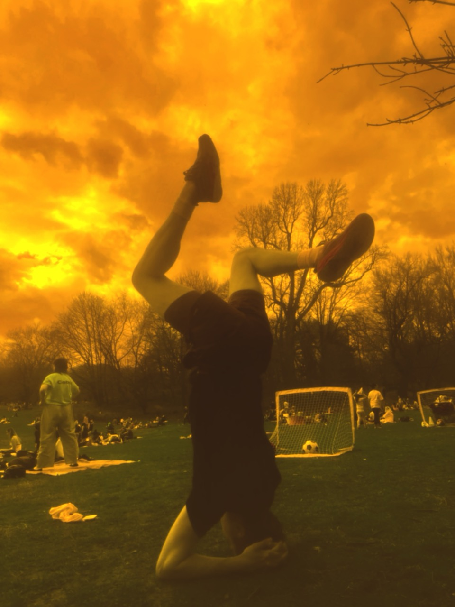
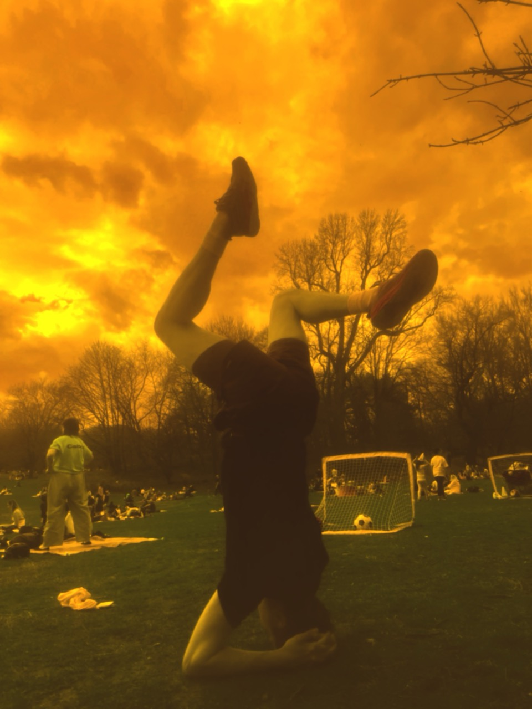

Elliott Etzkorn is an engineer. He is building new versions of Wikimedia. He founded and is improving t4t. He helped develop Ping Practice.
He is living in a cabin on the northwestern edge of Ashokan Reservoir.
You can call him at +1 612-669-4184 or write him at mail@elliottetzkorn.com.
He reconsiders himself and this website often.